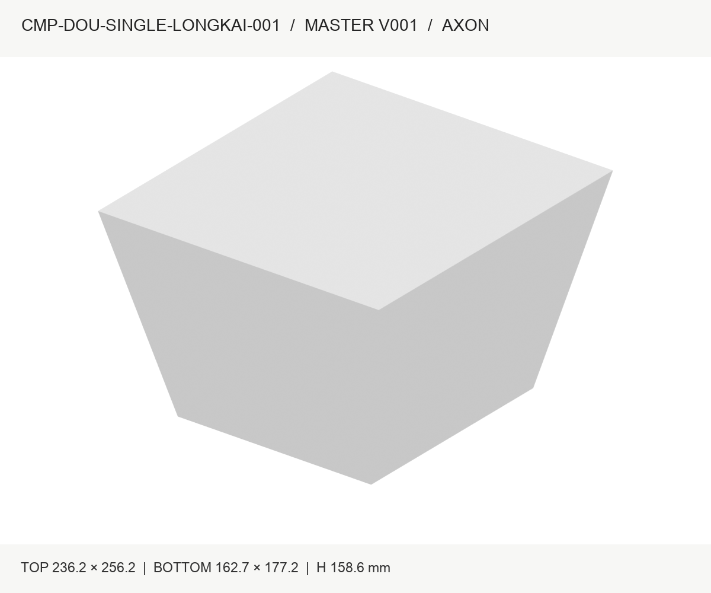
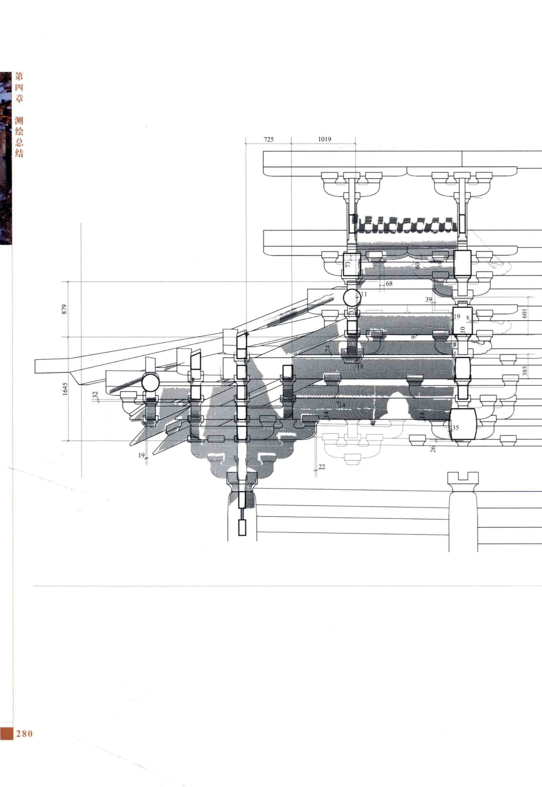

← 返回全部构件 来源与证据边界
外檐斗栱 / 实体构件族 / F069
并排观察轮廓、截面和端部。视角不完全一致时，只作可见形态对照；不做像素尺寸测量或相似度百分比。

沿用原有审核图；批准范围及外形证据限制保持。
现有 Master 为长方体包络，尚未表达斗耳与单向开口；测量样本量不等于全殿件数。

同源测绘的分析/解释；不是独立复测，也不单独证明完整轮廓。
此图用于层位和组合关系；具体实例位置见右侧。未在图中强行标注尚未完成身份对应的构件。
全殿斗栱体系
CMP-DOU-SINGLE-LONGKAI-001_MASTER
本页变体：当前登记口径，必要变化见原始资料
登记记录：1 条，仅表示对应记录范围，不能直接解释为实际物理件数。
本页范围依据：现行 Registry · 正式状态与批准范围
CMP-DOU-SINGLE-LONGKAI-001_MASTER_SEMANTIC_V001.json